Online Exhibit → Stalin’s Gulag
Living in the Gulag
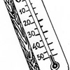
During their non-working hours, prisoners typically lived in a camp zone surrounded by a fence or barbed wire, overlooked by armed guards in watch towers. The zone contained a number of overcrowded, stinking, poorly-heated barracks. Life in a camp zone was brutal and violent. Prisoners competed for access to all of life’s necessities, and violence among the prisoners was commonplace. If they survived hunger, disease, the harsh elements, heavy labor, and their fellow prisoners, they might succumb to arbitrary violence at the hands of camp guards. All the while, prisoners were watched by informers—fellow prisoners always looking for some misstep to report to Gulag authorities.
Jacques Rossi, the artist who made the following drawings in the 1960s based on his memories, spent 19 years in the Gulag after he was arrested in the Stalin purges of 1936-37. He later published several writings, including his most important, The Gulag Handbook, in 1987 (published in English in 1989).

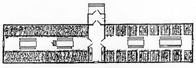
Layout of Barracks
Drawing by Jacques Rossi.
Courtesy of Regina Gorzkowski-Rossi.
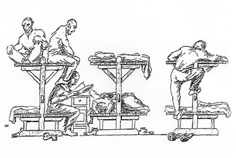
Baraki (Barracks)
“The Gulag was conceived in order to transform human matter into a docile, exhausted, ill-smelling mass of individuals living only for themselves and thinking of nothing else but how to appease the constant torture of hunger, living in the instant, concerned with nothing apart from evading kicks, cold and ill treatment.”
Drawing and memoir excerpt by Jacques Rossi.
Courtesy of Regina Gorzkowski-Rossi.
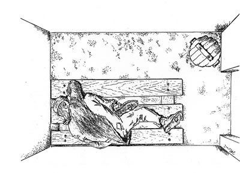
Odinochka (Solitary Confinement Cell)
“A lesson to learn: How to distribute your body on the planks trying to avoid excessive suffering? A position on your back means all your bones are in direct painful contact with wood... To sleep on your belly is equally uncomfortable. Until you sleep on your right side with your left knee pushed against your chest, you counterbalance the weight of your left hip and relieve the right side of your rib cage. You leave your right arm along the body, and put your right... cheekbone against the back of your left hand.”
Drawing and memoir excerpt by Jacques Rossi.
Courtesy of Regina Gorzkowski-Rossi.
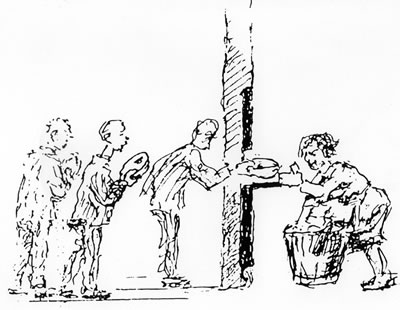
Soup Ration
Drawing by Jacques Rossi.
Courtesy of Regina Gorzkowski-Rossi.
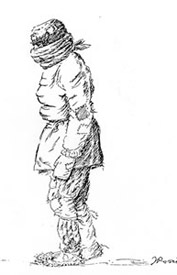
Self-Portrait
“There is nothing you can do to protect yourself against cold.”
Drawing and memoir excerpt by Jacques Rossi.
Courtesy of Regina Gorzkowski-Rossi.
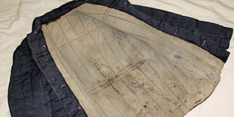
Typical winter overcoat worn by most of the Soviet population in the 1930s through 1950s. The coat is very similar to the type provided to Gulag prisoners.

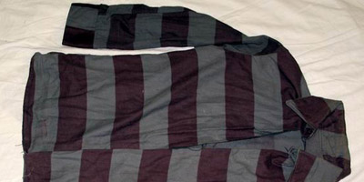
Camp jacket of maximum security prisoner.
Courtesy of the Gulag Museum at Perm-36.Paika. “Ration.” Prisoners in the Gulag received food according to how much work they did. A full ration barely provided enough food for survival. If a prisoner did not fulfill his daily work quota, he received even less food. If a prisoner consistently failed to fulfill his work quotas, he would slowly starve to death.

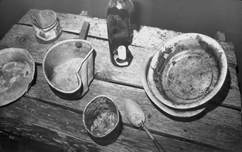
Prisoners’ Eating Utensils
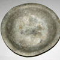
Dish from labor camp Stvor, Perm region, 1950s. Before the 1950s, camps did not provide dishes, and prisoners ate food from small pots.
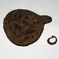
Portion of hand-made spoon from labor camp Bugutychag, Kolyma, 1930s. Spoons were considered a luxury in the 1930s and 1940s, and most prisoners had to eat with their hands and drink soup out of pots.
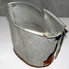
Pot made out of a tin can from a labor camp in Kolyma, 1930s. Such pots were made in the camp workshops by prisoners who exchanged them for food.
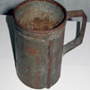
Camp mug from labor camp Bugutychag, Kolyma, 1930s. Originally manufactured as a kerosene measuring cup, this mug is unusually durable. It was probably stolen from the camp workshop by a prisoner to use as his personal mug.


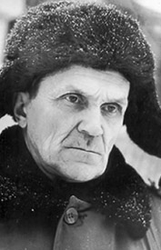
Varlam Shalamov
Russian author who was imprisoned in the Gulag for more than 20 years. He wrote the celebrated Kolyma Tales, a series of short stories based on his life in the Gulag.
Courtesy of the International Memorial Society.V.T. Shalamov, “Dry Rations,” from Kolyma Tales."Each time they brought in the soup... it made us all want to cry. We were ready to cry for fear that the soup would be thin. And when a miracle occurred and the soup was thick we couldn’t believe it and ate it as slowly as possible. But even with thick soup in a warm stomach there remained a sucking pain; we’d been hungry for too long. All human emotions—love, friendship, envy, concern for one’s fellow man, compassion, longing for fame, honesty—had left us with the flesh that had melted from our bodies...“

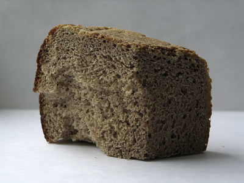
Prisoners’ daily bread ration.
Courtesy of the Gulag Museum at Perm-36.
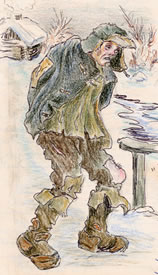
Dokhodiaga (Goner)
Goners were extremely emaciated prisoners on the verge of death from starvation. Their presence constantly reminded prisoners of their potential fate if they failed to fulfill work quotas and thus were deprived of their full food rations.
Drawing by Evfrosiniia Kersnovskaia, former Gulag prisoner.
Courtesy of Evfrosiniia Kersnovskaia Foundation, Moscow.Online Exhibit | Reflections | Traveling Exhibit | Teacher Resources | About
© 2006–2021, Center for History and New Media, George Mason University.